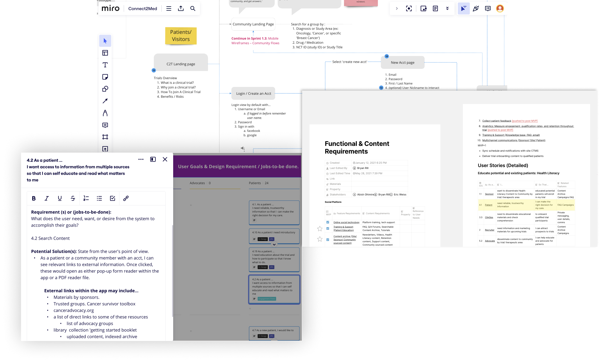
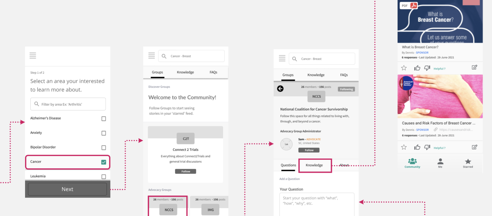
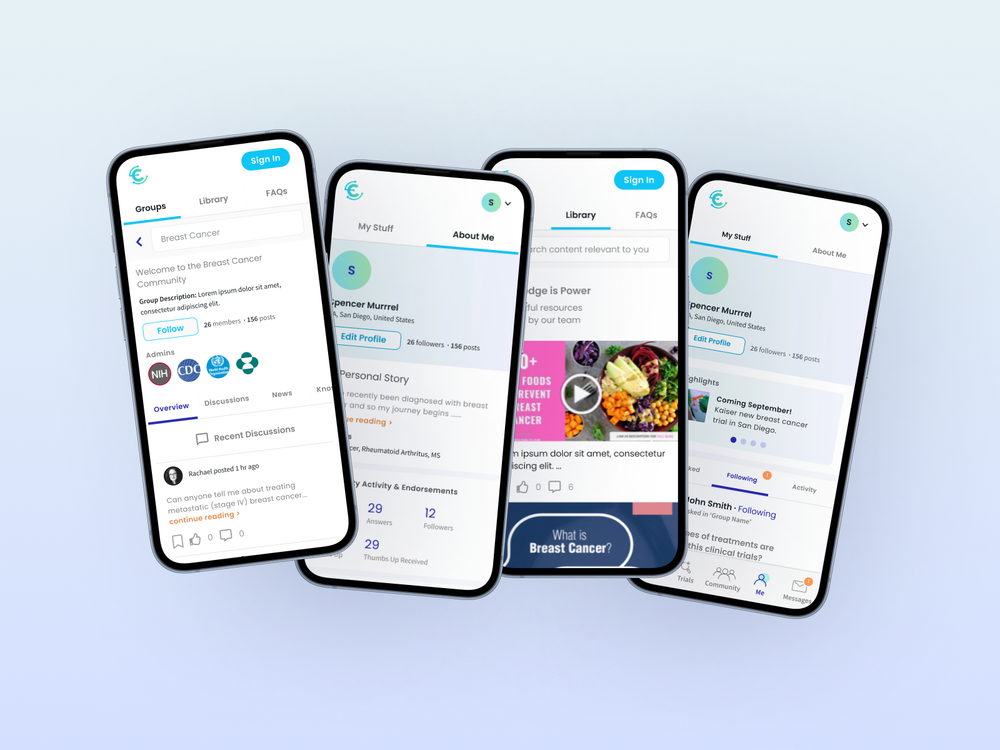
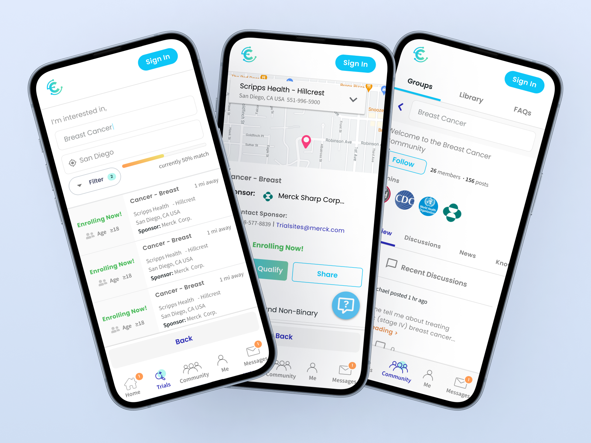

Research
Research
 Community
Community
Clinical trials routinely miss enrollment targets. The stakes fall on both sides: patients who could benefit from research never find it, and sponsors lose time when qualified candidates do not reach sites fast enough. The product problem was translation and qualification: help patients understand their options, then help sites focus on candidates worth the coordinator call.
The platform had two users with different stakes. Patients needed a clear way to find and evaluate studies. Sponsors needed enrollment to move faster. If the experience only helped one side, it would fail both.
The MVP covered 10 UX pathways, from trial search through community support. The prescreening flow filtered candidates before the CRC call. In prototype testing, it eliminated 60%+ of unsuitable leads, pointing to coordinator workload reductions of 12+ hours per week per site. At a burdened rate of $40-50/hr, that projects to roughly $25K per site per year in recovered coordinator time. This figure is extrapolated from prototype testing, not post-deployment measurement.
Mapping the patient journey made the friction hard to miss: unclear language, manual recruitment, and a long quiet stretch between enrollment and participation. Interviews with PIs and CRCs sharpened the operational constraint. The founding team wanted to launch with multiple sponsors at once; the system was not ready for that. My recommendation was to anchor on one design partner first, then scale.

Sponsor tools for recruitment campaigns, community moderation, and prescreener management shaped what the patient app had to support. The reverse was true too. Trial detail pages had to answer the questions patients asked first: condition, participation requirements, who the study was for, and whether it paid. The prescreen moved the first pass out of the CRC call and into a digital survey. Community and education content existed to build enough confidence for the next step.

Each session tested two flows: find and qualify for a trial, then use the community. PIs, CRCs, and patient-proxy participants ran the same protocol, which let us compare expert and patient reactions directly. Participants kept rewriting trial descriptions in their own words when asked to explain them. The product could not stop at matching; it had to turn clinical vocabulary into language a patient could act on.





The trials are technically public, but patients often cannot use the information without clinical vocabulary they do not have. ClinicalTrials.gov uses protocol language, assumes people already know what to search for, and rarely gives a plain-language summary. The design problem was translation: take what is public and make it readable by the person it is supposed to help.
Participants who reached "See if you Qualify" before understanding the trial basics, compensation, and consent process stopped there. The button felt like a commitment before they had enough information. The community and knowledge architecture did real conversion work by answering the questions that made action feel safe.
As we learned more about enrollment, the most useful intervention moved beyond the patient experience. CRCs were buried in manual eligibility checks, unqualified calls, and spreadsheet-based recruitment. Every patient who prescreened digitally before a CRC call was one call the coordinator did not have to make. Splitting intake into a digital survey plus a one-on-one call became a business model decision as much as a UX decision.
The research showed three places where patients lose momentum: matching, translation, and follow-up. Too much of that work depends on coordinator availability and whether someone can decode clinical language on their own.